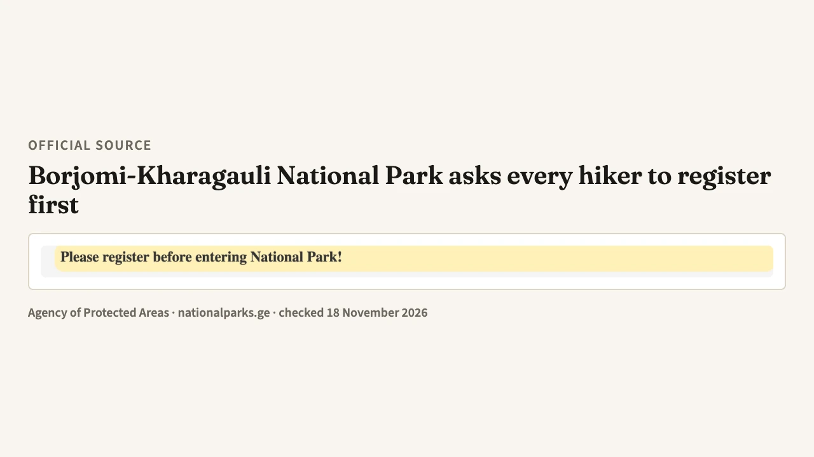
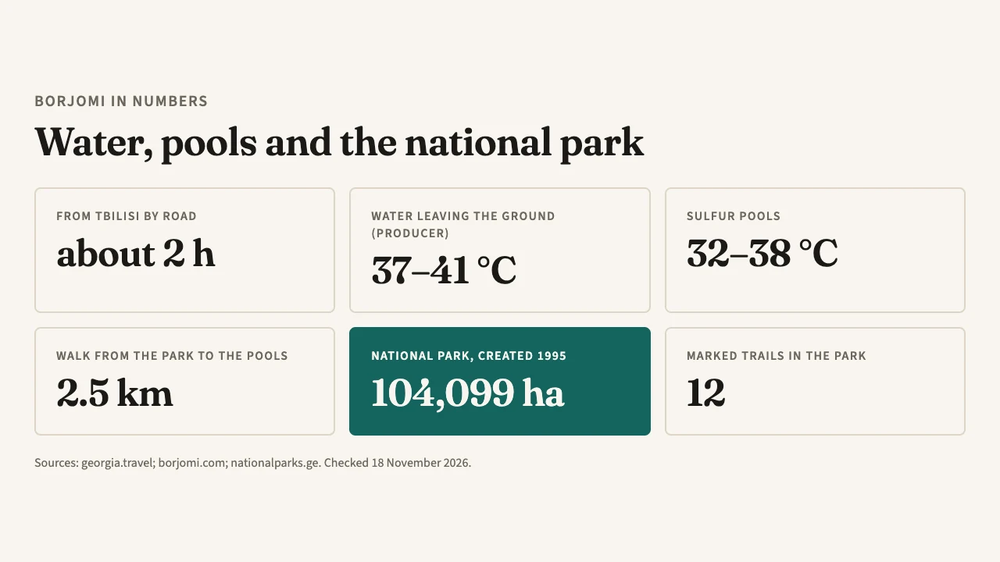

- From Tbilisi by road
- about 2 hours
- Water leaving the ground (producer)
- 37–41 °C
- Sulfur pools
- 32–38 °C
- National park
- 104,099 ha
This page is about Georgia the country, not the US state, and is part of the Georgia Travel Guide. Checked on 18 November 2026.
Borjomi mineral water: what it is and who should go easy on it
It comes from deep underground, and bottling here goes back to 1890: that is when the first bottling plant was built, according to georgia.travel, the site of Georgia's national tourism administration. The same page describes "volcanic mineral waters, which have bubbled up to the surface from a depth of 9 to 10 kilometers for more than 1,500 years".
Warm at the source. The producer's brand history page says the water is "emerging from the ground in a warm form — 37 - 41°C" and contains "more than 60 minerals". Read that as a marketing line, not a lab analysis: the page gives no breakdown of the minerals.
What the tourism site claims. The georgia.travel page credits the water with helping people with diseases of the stomach, liver, gallbladder and kidneys, among others. We found no medical source that confirms this, so we do not pass it on as advice. Mineral water is not a medicine and does not replace a doctor's care.
Who should go easy on it. Watch the salt. The WHO says that "the primary health effect associated with diets high in sodium is raised blood pressure". If you already have high blood pressure, read the next section before you make this water a daily habit.
Read the sodium on the label
Look at the label on the bottle in your hand. We found no sodium figure on the producer's website, and its US online shop was closed when we checked, so we do not quote a number here.
Turn it into salt. Labels may list sodium rather than salt. The British Heart Foundation gives a simple rule on its food labels page: "To convert sodium into salt, multiply the amount on the label by 2.5." For example, 400 mg on the label is 1 g of salt (400 × 2.5 = 1,000 mg). Note whether the label gives the amount per 100 ml or per litre, and how much you actually drink.
How much is a lot. The NHS says: "Adults should have no more than 6g of salt a day (around 1 level teaspoon)." The WHO sets a lower bar: less than 2,000 mg of sodium a day, which equals less than 5 g of salt. The two figures differ, so we give both. Salt from the water counts towards the same daily total as salt in your food.
Who should ask a doctor first. If you have high blood pressure, heart disease or kidney disease, or a doctor has put you on a low-salt diet, ask before you drink this water every day. The NHS advice on living with kidney disease recommends a healthy diet that includes low levels of salt. If you have high blood pressure and want advice in Tbilisi, you can find a cardiologist on 100doc.ge and contact the clinic directly.
Our tip for the spring. Tasting a few sips at the source is part of the visit. Making it a litre a day for a week is a different decision, and that is the one to check with a doctor if any of the above applies to you.

Borjomi Central Park and the spring
The park is the place to taste the water straight from the ground. Georgia's tourism site suggests you taste it "from the mineral spring" and warns: "It won't be bubbly." Do not expect the fizz you may know from the bottle.
Ekaterine Spring. According to georgia.travel, it is "perhaps the park's most beloved attraction". Bring a cup or a small bottle if you want more than a sip; that is our tip.
The old bottling plant. The first bottling plant was built in 1890, says the tourism site, and you will find it "on your left" once you enter the park.
Cable car and rides. A cable car runs from the park entrance "up to the cliffs that overlook the city", the tourism site says. Ride it for the view. The park also has amusement rides. We found no official hours or prices for either, so check at the entrance.
Our suggestion. Walk the park slowly, taste at the spring, take the cable car up for the view, then follow the marked path on into the forest to the sulfur pools. Wear shoes you can walk in: the path continues for about 2.5 km.

Borjomi sulfur pools
They are a forest walk from the park. The tourism site says that if you "follow the marked path through the park and into the forest beyond, you'll find unique sulfur pools", and it puts the walk at two and a half kilometres.
How warm. The tourism site's page on the pools says: "On average, the temperature of the water is between 32 and 38 degrees Celsius." There are "larger pools suitable for adults and smaller ones for children", with "showers and changing rooms".
What to bring. Pack "a swimsuit and towel"; the tourism site says "changing cabins will be available on spot". We found no official prices or opening hours, so check before you set off.
In winter. The pools page suggests a winter visit, when "their warmth is a delicious contrast" to the cold. It does not say outright that the pools are open all year, so check locally first.
Health claims. The tourism site says the pools are used for some diseases. As with the water, we found no medical confirmation, so we do not recommend them for any condition.
Hot water and your health. Hot pools are not for everyone. Our guide to Tbilisi's sulfur baths explains who should check with a doctor first, such as in pregnancy or with high blood pressure, and why not to bathe after alcohol. Our tips: keep the first soak short, drink water, do not soak alone, get out slowly and stop if you feel dizzy or unwell. If someone faints, has chest pain or is confused, get them out of the water, lay them down in the shade and dial 112. The pools are in the forest, so help can take time to arrive.
Borjomi-Kharagauli National Park
It is a large protected area with marked trails, and the first national park since Georgian independence. The park's official site, nationalparks.ge, calls it "the first national park created in independent Georgia in 1995". Its "total area is 104,099 hectares", and "In total, 12 trails are marked".
Register first. The park's site is clear: "Please register before entering National Park!" Its visitor guide adds that "it is necessary to pass registration at Visitor Center", in the town itself or in Kharagauli. To check the details before you go, call the park on +995 599 747 919.

What to wear and carry. The guide asks hikers to "wear coarse trousers and high-top shoes". Our additions: enough water and food for the whole trail, a charged phone with 112 saved, layers for changing weather, and a word to your hotel about your route and when you expect to be back.
Snowshoes in winter. The park lists snowshoe hiking for December to February. Winter trails take longer, so start early; that is our advice.
Ticks. On its Georgia page, the UK's TravelHealthPro warns of "insect or tick-borne diseases in some areas of Western Asia", including Crimean-Congo haemorrhagic fever. It advises: "All travellers should avoid insect and tick bites day and night." Our tips: long sleeves, trousers tucked into socks, insect repellent and a tick check after every walk. If a tick bites you or you get a fever after a hike, see a doctor.
Help can be far away. UK government advice says: "Outside Tbilisi, medical facilities are limited." On a trail, help can take a long time to reach you, so in an emergency dial 112 straight away.

Tbilisi to Borjomi: getting there
It is about 2 hours by road. That is the travel time georgia.travel gives from Tbilisi; traffic, weather and stops can make it longer.
By car, taxi or tour. You can drive, hire a car with a driver or join an organised tour. If you take a taxi, agree the price and the return time before you set off, and save your hotel's address on your phone.
By train. Georgian Railway's timetable lists daily trains between the capital and the town; the train is slower than the road. Timetables change, so check railway.ge shortly before you travel.
The narrow-gauge line to Bakuriani. The old mountain railway known as the Kukushka is not running at the time of writing. Restoration has been announced, but reports give different dates for its return, so check before you plan a trip around it.
When to go. The tourism site calls it "a town of cold winters and long, hot summers". In summer, plan walks for the morning; in winter, pack warm layers and check road conditions before you drive.

Things to do in Borjomi
Beyond the spring and the pools, the tourism administration points to several sights in and around the town. Here are the ones its page names.
The Green Monastery. It is "About two kilometers away", according to georgia.travel. Ask locally about the road or path before you set out.
The museum of local lore. It holds "more than 40,000 objects". The building itself dates from 1890 and was built for the Romanov administration, the tourism site says.
Likani Palace. The tourism site describes it as the royal summer residence of the Russian imperial period. We found no official word on visits inside, so plan to see it from outside.
Petre and Gogia fortresses, and Timotesubani. The same page points to the old fortresses of Petre and Gogia and to Timotesubani nearby. Ask locally how far each is and how to get there.
A simple day. Start at the spring and the old bottling plant, take the cable car for the view, then walk to the sulfur pools before lunch. Spend the afternoon at the museum or the Green Monastery. With two days, add a trail in the national park, after registering at the visitor centre. This is our suggestion, not an official route.
Health and help in Borjomi
In an emergency, dial 112. UK government advice puts it simply: "Dial 112 and ask for an ambulance." Here is how to call an ambulance on 112 and what to say.
The local hospital. Georgia's tourism administration lists Borjomi Geo Hospital in its medical information for visitors: Giorgi Saakadze Street 3, tel. +995 32 250 52 22 (032 250 52 22 from a Georgian number). For anything urgent, dial 112 rather than this number. Keep the address on your phone to show a driver.
For anything that can wait. Outside the capital, care is limited, as UK advice warns, and Tbilisi is about 2 hours away. If a problem is not urgent, it may be easier to see a doctor back in the city.
Ticks. After walks in the park or the forest, check your skin for ticks; see the national park section for what TravelHealthPro says.
Insurance. Georgia requires visitors to have travel insurance to enter: see the 2026 entry insurance rule.
Frequently asked questions
Is Borjomi water good for you?
How much sodium is in Borjomi water?
Can you drink from the spring in the park?
How hot are the sulfur pools?
On average 32–38 °C, according to georgia.travel. There are larger pools for adults and smaller ones for children. If you are pregnant, have high blood pressure or have been drinking alcohol, read our sulfur baths guide before you go in. If someone feels faint or unwell, help them out slowly; if it is serious, dial 112.
Do you need to register in Borjomi-Kharagauli National Park?
How do you get from Tbilisi to Borjomi?
Sources
- Georgian National Tourism Administration: the town guide (travel time, water, park, pools, sights) ↑
- Georgian National Tourism Administration: the sulfur pools ↑
- Georgian National Tourism Administration: medical information for visitors (hospital) ↑
- The producer: brand history (temperature at the source, minerals) ↑
- nationalparks.ge: the national park (year, area, trails, registration) ↑
- nationalparks.ge: visitor guide (registration, clothing) ↑
- Georgian Railway: general timetable ↑
- Georgian Public Broadcaster (1TV): restoration of the Bakuriani mountain railway, April 2026 ↑
- NHS: salt in your diet ↑
- NHS: living with kidney disease ↑
- WHO: fact sheet on the daily salt limit and blood pressure ↑
- British Heart Foundation: food labelling ↑
- TravelHealthPro: Georgia ↑
- GOV.UK travel advice for Georgia: health ↑
This guide is general information, not medical advice: the doctor decides on your care.